04. Computer structure and microprocessors (CPU)
Every aircraft computer, from the cockpit clock to the AIDS data recorder, rests on three basic blocks: the CPU, memory (RAM/ROM), and the interconnecting bus system. This module covers computer structure, CPU operating principles, and the semiconductor memory types used in avionics.
CO/CLO: CO4, CO5, CLO3Time (estimate): ≈ 7.6 lecture hours52 slidesQuestions: 88 (61 original)
Slide: Basic computer structure and microprocessor pp.1-52 · Tooley Ch.6-7 (p.95-138) · Floyd Ch.11 Data Storage (p.627-696) · Book content map
Tooley: Ch.6 Computers (p.95-115): computer systems, data storage, backplane bus + Ch.7 The CPU (p.116-138): internal architecture, x86/Pentium/AMD 29050
Floyd: Ch.11 Data Storage (p.627-696): RAM/ROM/Flash memory. Floyd has NO dedicated chapter on CPU/microprocessor architecture: this is the biggest difference between the two books for this module.
This module has the WEAKEST match between the two books: Floyd is a pure digital-logic fundamentals text and does not cover computer/CPU architecture in depth like Tooley: the CPU content in this module relies mainly on Tooley.
- Basic structure of a computer system
- Semiconductor memory
- Internal CPU architecture
- Instruction cycle & execution timing
- Advanced architecture & aviation applications
📷 The lecturer's original slides (click to enlarge)
52 slides

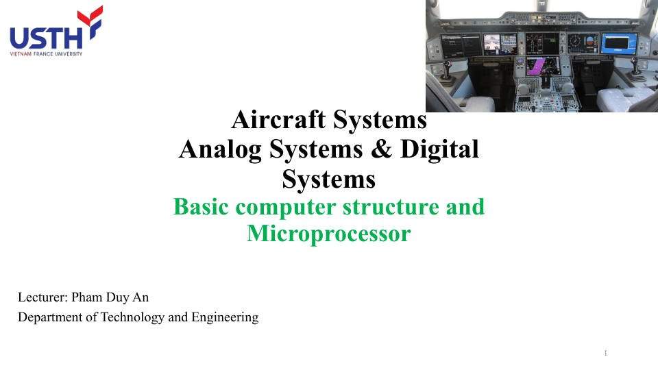
cpu·1
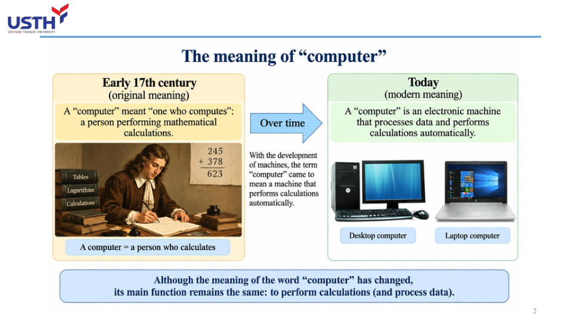
cpu·2 cpu·3
cpu·3 cpu·4
cpu·4 cpu·5
cpu·5 cpu·6
cpu·6 cpu·7
cpu·7 cpu·8
cpu·8 cpu·9
cpu·9 cpu·10
cpu·10 cpu·11
cpu·11 cpu·12
cpu·12 cpu·13
cpu·13 cpu·14
cpu·14 cpu·15
cpu·15 cpu·16
cpu·16 cpu·17
cpu·17
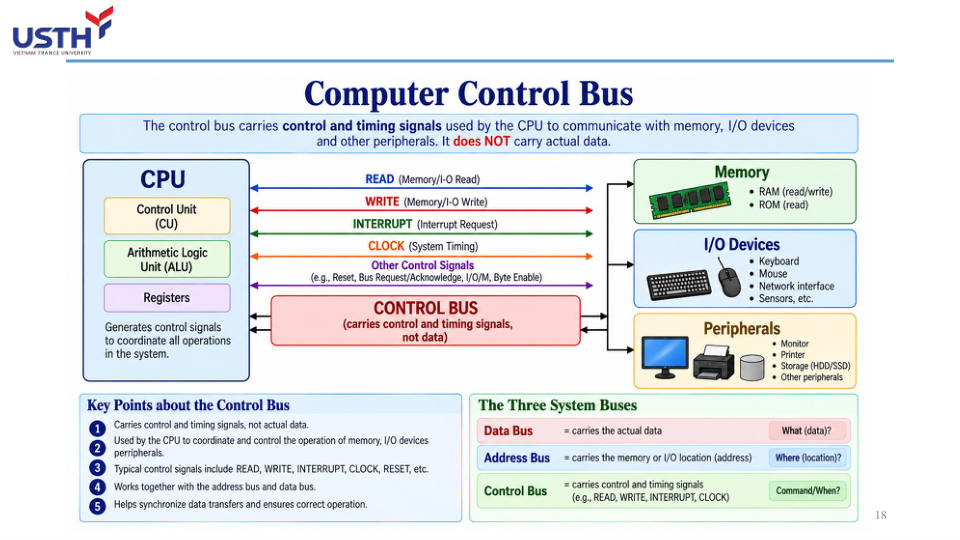
cpu·18 cpu·19
cpu·19 cpu·20
cpu·20 cpu·21
cpu·21 cpu·22
cpu·22 cpu·23
cpu·23 cpu·24
cpu·24
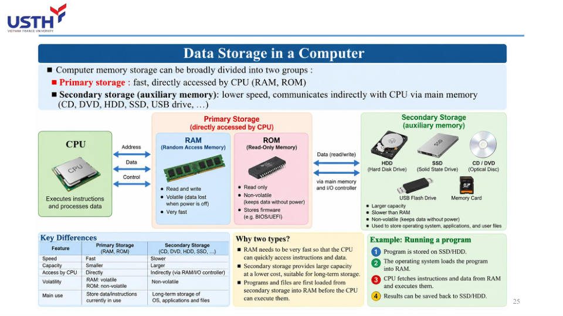
cpu·25 cpu·26
cpu·26 cpu·27
cpu·27 cpu·28
cpu·28 cpu·29
cpu·29 cpu·30
cpu·30 cpu·31
cpu·31 cpu·32
cpu·32 cpu·33
cpu·33
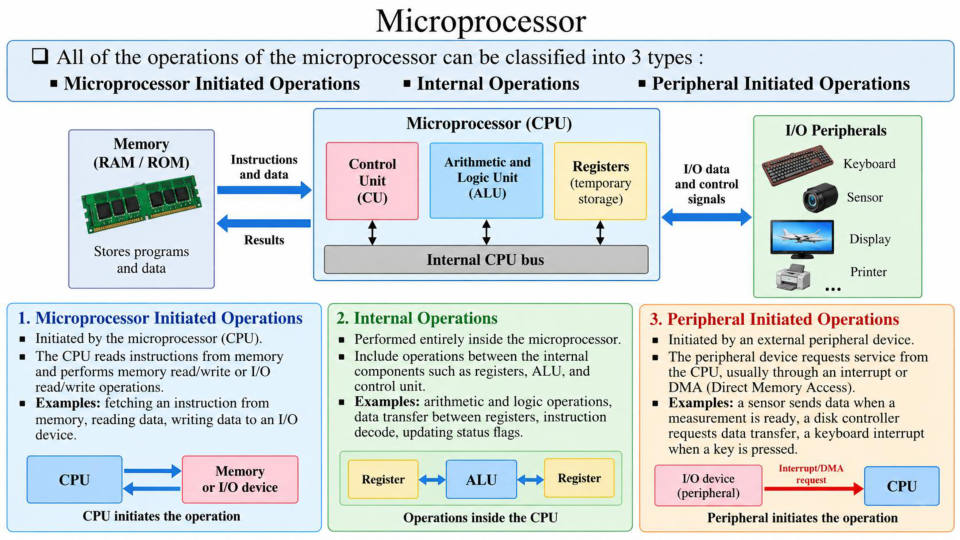
cpu·34 cpu·35
cpu·35 cpu·36
cpu·36 cpu·37
cpu·37 cpu·38
cpu·38
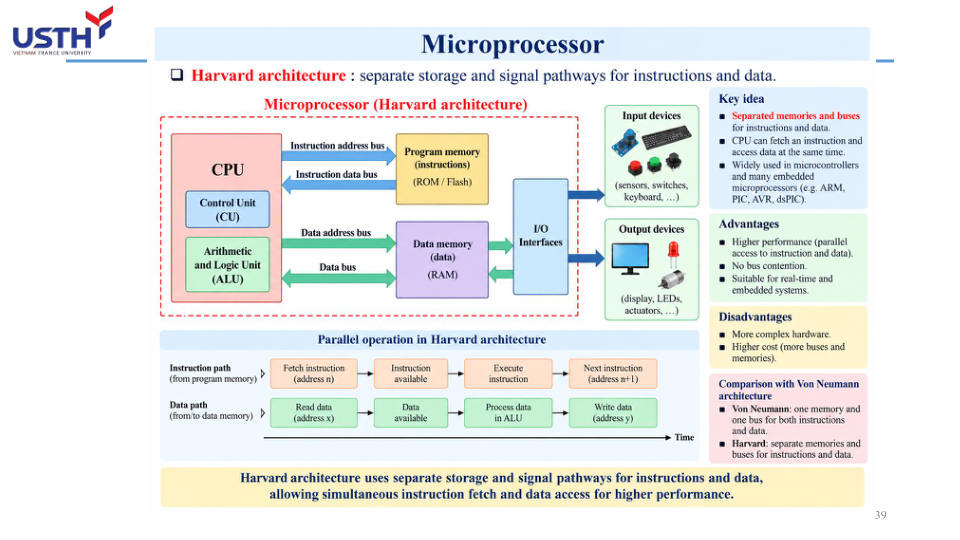
cpu·39 cpu·40
cpu·40 cpu·41
cpu·41 cpu·42
cpu·42 cpu·43
cpu·43 cpu·44
cpu·44 cpu·45
cpu·45
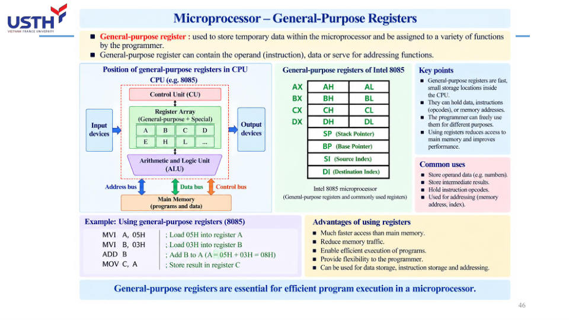
cpu·46 cpu·47
cpu·47 cpu·48
cpu·48
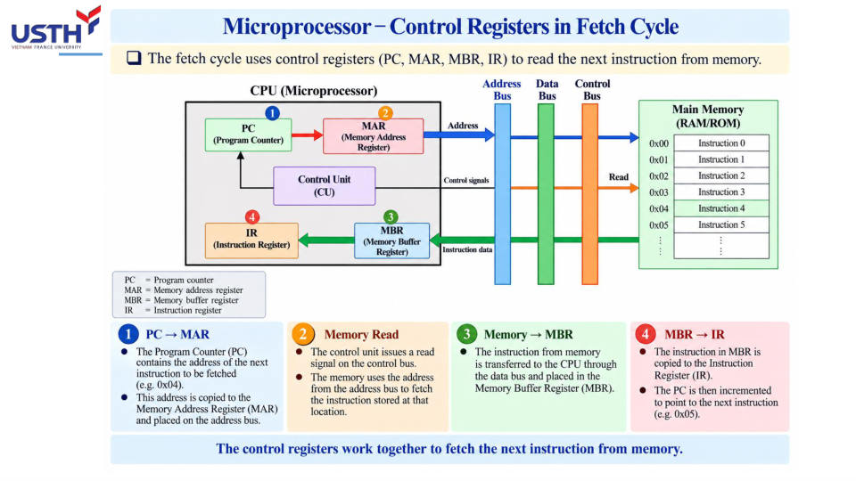
cpu·49
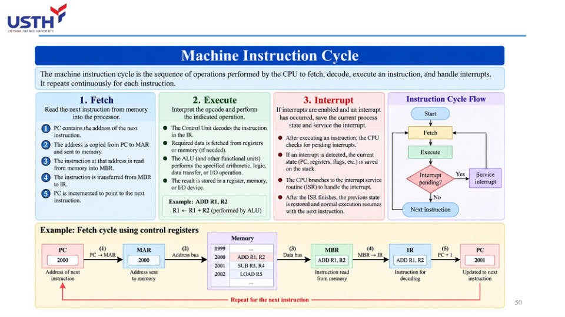
cpu·50 cpu·51
cpu·51 cpu·52
cpu·52Lecture
Basic structure of a computer system
- The IPO model: Input → Process → Output
- Three buses: address, data, control
- Examples: the cockpit clock computer and the AIDS data recorder
The IPO model: a thinking framework for EVERY computer system
Input → Process → Output is a framework that applies to every computer, from a pocket calculator to an FMGC. Before analysing any new system, always identify first: what is the input, what is the process, what is the output.
📖 Explanation for beginners
The IPO model looks simple enough to be dismissed, but that simplicity is exactly its strength: no matter how complex a system looks, you can ALWAYS break it down into exactly three questions. Where does the data come in from (Input)? How is it transformed (Process)? What is the final result and where does it go (Output)?
For a pocket calculator, Input is the key presses, Process is the arithmetic, Output is the number shown on screen. For an FMGC, Input is dozens of sensors, Process is thousands of lines of flight-control logic, Output is commands sent to control surfaces. The same framework, applied at both extremes of complexity.
Three buses and their distinct roles
| Bus | Carries | Direction |
|---|---|---|
| Address bus | memory/device address | one-way (CPU→memory) |
| Data bus | actual data | two-way |
| Control bus | control/timing signals | two-way |

📖 Explanation for beginners
The three buses are like three kinds of roads in a city, each serving a different purpose: the address bus is like a signpost (telling you WHERE to go, carrying no cargo), the data bus is like the actual delivery truck (carrying the real DATA), and the control bus is like the traffic light system (commanding when to go, when to stop, which direction).
The most important distinction to remember: the address bus is ONE-WAY only (the CPU always issues the address, memory/devices always receive it), while both the data bus and control bus are TWO-WAY, since the CPU needs to both read and write data, and control signals also need feedback flowing back from the device.
Worked example: the largest address on a 24-bit bus
A 24-bit address bus → 2²⁴ = 16,777,216 possible addresses, from 0 to 16,777,215. Converting the largest value to hex (6 hex digits since 24÷4=6): FFFFFF. (Matches Tooley Ch.6 Q5: verified in notebook 04.)

📖 Explanation for beginners
The formula 2ⁿ (learned back in Module 01 for counting binary combinations, and again in Module 03 for counting decoder outputs) is applied here on the exact same principle: the number of address wires (n) determines the maximum number of distinguishable memory locations (2ⁿ).
With a 24-bit bus, 2²⁴ gives 16,777,216 addresses, and the largest address (all bits set to 1), converted to hex, needs exactly 6 digits (since 24 divides evenly by 4) to give FFFFFF: this is a direct hands-on application of the 4-bit-grouping-for-hex principle learned in Module 01.
Case study: the A320 cockpit clock (Figure 6.11, Tooley)
A crystal oscillator generates the UTC time base → the microprocessor processes the time data → ROM stores the control software → RAM holds working data → a serial data encoder sends time out on the ARINC 429 bus. This is a complete real-world IPO + 3-bus example in ONE actual device.

📖 Explanation for beginners
This is a complete REAL example, packing the whole IPO framework and all three buses into ONE specific device: the A320 cockpit clock. The crystal oscillator (the time source, like an Input), the microprocessor processing the data (Process, using all three buses to talk to ROM/RAM), then sending it out on the ARINC 429 bus (Output).
The attached image shows a similar block diagram, with sensor data and pilot inputs flowing in, processed by the CPU together with memory, then output as control commands and displayed information: exactly the IPO plus 3-bus structure just learned, applied to a real aircraft system rather than an abstract example.
⚠️ Trap: thinking a 'bus' is a single wire
Each 'bus' is actually a BUNDLE of many parallel wires (e.g. a 24-bit address bus = 24 separate wires carrying signals simultaneously), not a single wire. The number of wires directly determines how many bits can be transferred at once.
📖 Explanation for beginners
This is a very common visual misconception for beginners: picturing a “bus” as a single wire, like a network cable. The reality is entirely different: a “bus” is a BUNDLE of parallel wires, each carrying exactly one bit.
A 24-bit address bus is not “one line used 24 times”, it is 24 SEPARATE PHYSICAL WIRES, each carrying exactly 1 bit of the address, all 24 wires operating SIMULTANEOUSLY to transfer a complete address in a single clock tick. This physical wire count is exactly what technical documents mean by “bus width”.
Quick self-check (ungraded)
If an address bus has only 8 wires, how many unique memory locations can it address? (Hint: 2⁸.) Compare with the 24-bit result above to see how a few extra bits dramatically increase addressable memory.
📖 Explanation for beginners
This practice exercise runs the 2ⁿ formula in reverse with a much smaller n: an 8-bit bus gives 2⁸=256 possible addresses, far fewer than the 16,777,216 addresses of the 24-bit bus in the previous slide.
This enormous gap (256 versus over 16 million, even though the bit count only tripled from 8 to 24) vividly illustrates the EXPONENTIAL nature of the power function: each extra bit does NOT add a fixed amount to the address count, it DOUBLES the existing count. This is why modern systems always push hard to widen an address bus by even just a few bits, since the payoff grows non-linearly.
Semiconductor memory
- RAM (read/write) and ROM (read-only), EPROM, Flash
- Row-column matrix structure, CAS/RAS
- Backplane buses (e.g. VMEbus) for multi-board systems
RAM vs ROM: the core difference
| Criterion | RAM | ROM |
|---|---|---|
| Writable? | Yes (read/write) | No (read-only, except EPROM/Flash) |
| Loses data on power-off? | Yes (volatile) | No (non-volatile) |

📖 Explanation for beginners
Picture RAM as a whiteboard (freely erasable and rewritable, but wiped clean when the room lights go off), and ROM as a printed page in a book (readable but not overwritable, and still intact even with the lights off).
The two criteria in the table are the two core questions worth asking about any memory type: can it be WRITTEN to (read/write versus read-only), and does it KEEP its data when power is lost (volatile versus non-volatile). These two criteria are independent of each other, and as the next slide shows, some “hybrid” memory types (like EEPROM/Flash) blur the traditional simple RAM/ROM boundary.
EPROM, OTP EPROM, Mask ROM: three easily confused types
Mask ROM: fixed at manufacture, never changeable. OTP EPROM: user-writable exactly ONCE. EPROM (UV-erasable): erased with UV light, rewritable MANY times: the only one of the three that is truly 'erasable and reprogrammable' (Tooley Ch.6 Q8).

📖 Explanation for beginners
These three ROM types differ in exactly ONE respect: WHO is allowed to write, and HOW MANY TIMES. Mask ROM: the manufacturer fixes the contents permanently during fabrication, the end user can never write to it. OTP EPROM: the user can write to it, but only ONCE (like a sheet of paper writable only with permanent ink).
EPROM (the UV-erasable kind) is the most “flexible” of the three: the user can write to it, then shine UV light through a transparent window on the chip's casing to WIPE IT CLEAN, then write it again, repeatable many times. This is exactly what sets EPROM apart from the other two, making it the only truly “erasable and reprogrammable” type among the three.
Worked example: how many DRAM chips for 32KB
Each 16K×4-bit chip holds 16,384×4 = 65,536 bits = 8KB. Required: 32KB ÷ 8KB = 4 chips. (Matches Tooley Ch.6 Q13: verified by code in notebook 04.)
📖 Explanation for beginners
This calculation is a classic “unit conversion” problem, and it needs exactly three steps, none of which can be skipped. Step 1: compute ONE chip's capacity by multiplying the number of addresses by the bits per address (16,384×4=65,536 bits). Step 2: convert bits to bytes (divide by 8, giving 8,192 bytes = 8KB, since 1 byte = 8 bits).
Step 3: divide the total capacity needed (32KB) by one chip's capacity (8KB) to get the number of chips required: 32÷8=4. The most common mistake in this type of problem is forgetting to convert bits to bytes in Step 2, which throws the final answer off by a factor of 8.
Row-column matrix structure and the CAS/RAS signals
Semiconductor memory is organised as a row×column grid to reduce the number of address pins needed. RAS (Row Address Select) latches the row address, CAS (Column Address Select) latches the column address: sent in two steps instead of the full address at once, saving IC pins.
📖 Explanation for beginners
The row-column matrix structure solves a subtle but very real problem: sending an entire address all at once would require a large-capacity memory chip to have an enormous number of physical address pins (for example, a chip with 1 million cells would need 20 address pins if sent all at once).
The solution: arrange the memory cells into a row×column grid, then send the row address FIRST (latched by the RAS signal), followed by the column address (latched by the CAS signal), reusing the SAME set of address pins for both transmissions. That same 1-million-cell chip now needs only about 10 address pins (instead of 20), at the cost of a slightly longer read/write time since the address arrives in two steps instead of one.
⚠️ Trap: confusing 'random access' with everyday 'RAM' usage
Technically, ROM is ALSO 'random-access' memory (every cell is accessed with equal ease): it simply cannot be written to. Everyday usage of the term 'RAM' has drifted to mean 'read/write memory', which differs from the original technical definition of 'random access'.
📖 Explanation for beginners
This is a case where a strict technical term and everyday usage have DRIFTED APART, causing serious confusion if the two are not kept separate. Technically, “random access” simply means every memory cell is accessed with equal speed regardless of position, with NO connection whatsoever to whether it can be written to.
By that definition, ROM fully deserves the label “random access” too (as opposed to sequential-access memory like magnetic tape, which must be “wound” past every position in between). But in everyday usage, the word “RAM” has drifted to mean “read/write memory” specifically: this is exactly why no one ever calls ROM “a type of RAM”, even though technically ROM is random-access too.
Quick self-check (ungraded)
A system must store control software that users should NEVER be able to accidentally overwrite: should you choose RAM, ROM, or EPROM? Why?
📖 Explanation for beginners
This practice exercise applies the exact elimination logic just learned, based on the two criteria: RAM is ruled out immediately because its data is lost when powered off (unsuitable for control software that must persist long-term) AND because RAM is writable (risking accidental overwrite, exactly what the problem forbids).
Between ROM and EPROM, neither allows the user to accidentally overwrite it during normal operation (ROM cannot be written at all, EPROM can only be rewritten through a special deliberate UV process, never “accidentally”). Both are reasonable choices, depending on whether the software needs periodic updates (choose EPROM) or is permanently fixed forever (choose the cheaper Mask ROM when mass-produced).
Internal CPU architecture
- Accumulator, general-purpose registers, ALU
- Program Counter (PC) and Stack Pointer (SP)
- Bus buffers and how the CPU talks to the external bus
Four main functional blocks inside a CPU
- Registers: temporary storage for addresses/data
- ALU (Arithmetic Logic Unit): performs arithmetic/logic operations
- Instruction decoder
- Control & timing unit
📖 Explanation for beginners
Picture a CPU as a small office with exactly four dedicated staff. Registers are the small drawers on the desk (holding whatever is being worked on right now). The ALU is the calculator clerk (performing addition/subtraction/comparison). The instruction decoder is the intake clerk (reading a request and figuring out what it means). The control unit is the manager (coordinating all three of the others to do the right thing at the right time).
These four blocks do not work in isolation: they cooperate TIGHTLY within every single instruction cycle, and the next slide dives into the single most important register among them.
The accumulator: the most heavily used register
The accumulator is both a source (holding an input operand) and a destination (holding the result) for most CPU operations: this is why it is referenced far more often than any other register in CPU technical documentation.
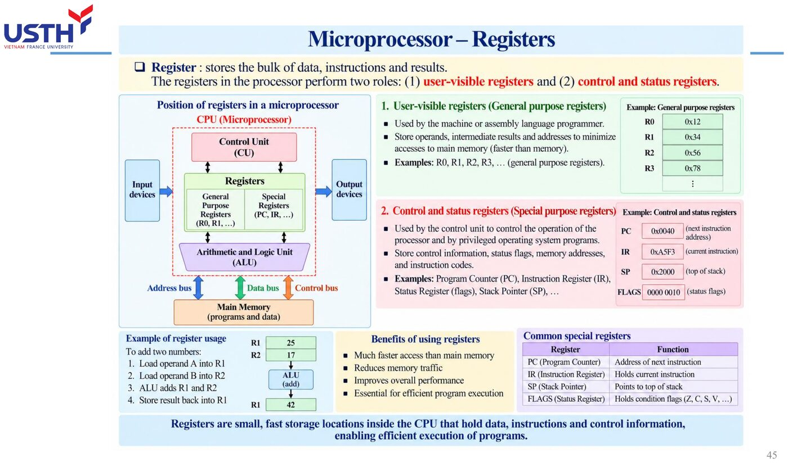
📖 Explanation for beginners
The accumulator earns a name of its own (rather than being just “one of many registers”) because of its SPECIAL role: most arithmetic/logic instructions use the accumulator as both the STARTING point (holding the first operand) and the ENDING point (holding the result after the calculation).
Picture it as the one and only mixing bowl on a kitchen counter: you pour ingredients in, mix (calculate), and the result also ends up RIGHT IN that same bowl, ready for the next step or to be poured out. This is exactly why the accumulator appears far more often in CPU technical documentation than any other register.
Program Counter (PC) and Stack Pointer (SP)
The PC always holds the address of the NEXT instruction to be fetched: also called the 'instruction pointer'. The SP points to the current top of the stack, an area of external RAM used to temporarily store return addresses/register values during function calls or interrupt handling.
📖 Explanation for beginners
PC (Program Counter) and SP (Stack Pointer) are both “pointers” (registers holding only an address, not actual data), but they point at two entirely different things. The PC always points to the NEXT instruction to be fetched (like a finger tracking the next line to read in an instruction manual).
The SP points to the current top of the stack, a special area of RAM operating on a “last in, first out” principle (like a stack of plates: you can only add or remove a plate from the top). The stack is used to temporarily store a return address when calling a subroutine, or to save register states while handling an interrupt, so everything can later be restored exactly.
Bus buffers: why the data bus buffer must be bidirectional
The CPU needs to both READ data from memory (inbound) and WRITE data to memory (outbound) through the same data bus: the bus buffer connecting the CPU to the data bus must therefore support both directions (bidirectional), unlike the address bus which only needs one direction.
📖 Explanation for beginners
The reason the data bus buffer must be bidirectional lies in the very nature of the CPU's work with memory: the CPU does not only READ instructions and data (inbound), it must also WRITE calculation results back to memory (outbound), and both of these travel over the SAME physical data bus.
Compare with the address bus: the CPU ONLY EVER issues an address outward (it never “receives” an address sent back from memory), so the address bus buffer only needs one direction. This is exactly why, on a CPU block diagram, the buffer connecting to the data bus is always drawn with a double-headed arrow, while the one connecting to the address bus has only a single-headed arrow.
⚠️ Trap: confusing the ALU with the instruction decoder
The ALU performs OPERATIONS (add, subtract, AND, OR, invert...) on data; the instruction decoder only DETERMINES what instruction was just fetched so it can direct the correct functional block: two completely different jobs despite sitting close together on a CPU block diagram.
📖 Explanation for beginners
This is a pair of functional blocks very easy to conflate, since they always “work right next to each other” in every instruction cycle, yet their jobs are entirely separate. The ALU is like the CPU's “hands”: it ACTUALLY performs the calculation (add, subtract, AND, OR...) on specific data.
The instruction decoder is like the “eyes and interpreting brain”: it does no calculation at all, it just LOOKS at the instruction just fetched and DETERMINES what it is (add? compare? jump?), then signals the ALU (or another block) what TO DO. If the instruction decoder “misreads” an instruction, the ALU will still correctly perform an operation, just the WRONG one, clearly demonstrating these two blocks are functionally independent despite always working side by side.
Quick self-check (ungraded)
A byte of data needs to be inverted (NOT): which CPU block performs this: the accumulator, the ALU, or the instruction register?
📖 Explanation for beginners
This practice exercise requires applying exactly the distinction just learned: inverting a bit (NOT) is a genuine LOGIC OPERATION performed on data, so the responsible block is certainly the ALU, not the accumulator (which only HOLDS data, without calculating anything itself) and not the instruction register (which only stores the instruction code, without processing data).
The full sequence: the data to be inverted is usually loaded into the accumulator first, the ALU reads that data, performs the NOT operation, then writes the result BACK into the accumulator: three blocks cooperate (accumulator, ALU), but the actual calculation is carried out by exactly one of them (the ALU).
Instruction cycle & execution timing
- The fetch - decode - execute cycle
- T-states, machine cycles (M0/M1/M2…)
- Computing instruction execution time from clock frequency
The Fetch - Decode - Execute cycle
Fetch: the CPU reads the opcode from the memory location the PC points to. Decode: the decoder determines what the instruction is. Execute: the ALU/relevant functional block carries it out. This cycle repeats continuously until a HALT instruction is met.
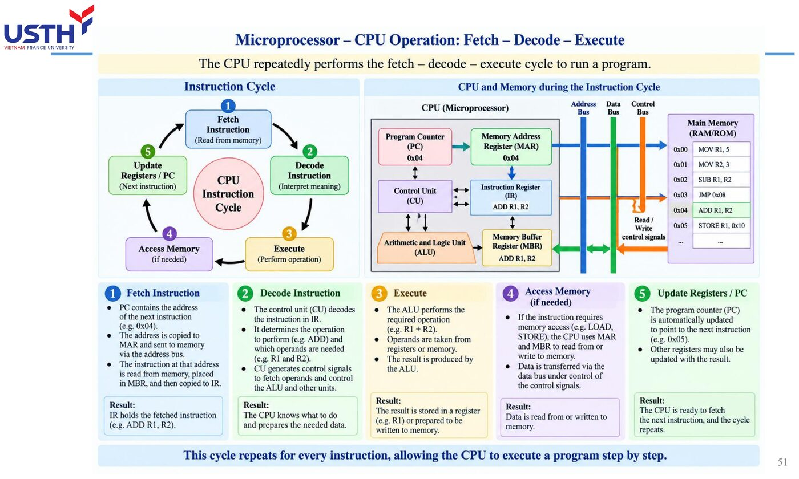
📖 Explanation for beginners
The Fetch-Decode-Execute cycle is the “heartbeat” of every CPU, repeating billions of times per second without ever stopping (unless a HALT instruction is hit). Picture it like reading a recipe book one line at a time: Fetch is “read the next line” (grab exactly the instruction the PC is pointing at), Decode is “understand what that line says to do” (say, “add 2 spoons of sugar”), Execute is “actually do it” (pour the sugar in).
The key point to grasp: this is not three steps done once and finished, it is an INFINITE LOOP, each pass handling exactly one instruction, then automatically looping back to Fetch for the next one, continuing indefinitely.
T-states and machine cycles
One T-state = exactly one clock cycle. An instruction usually needs SEVERAL T-states, grouped into machine cycles M0, M1, M2...: per Tooley, M1 is the opcode fetch-and-decode cycle.
📖 Explanation for beginners
Distinguishing a T-state from a machine cycle is like distinguishing “one clock tick” from “one stage of work”: a T-state is just ONE single tick of the system clock (not enough to accomplish anything meaningful on its own), while a machine cycle (M0, M1...) is a GROUP of T-states combined to complete one meaningful stage (for example, M1 is the entire opcode fetch-and-decode stage).
An analogy: a T-state is like a single footstep, while a machine cycle is like “walking from this room to that room”, a complete action requiring several footsteps COMBINED to finish.
Worked example: execution time at 50MHz, 11 T-states
Clock period T = 1/50,000,000 = 20ns. Execution time = 11 × 20ns = 220ns. (Matches Tooley Ch.7 Q15: verified by code in notebook 04.)
📖 Explanation for beginners
This calculation applies the most basic physics formula relating time and frequency: the period (T) is always the RECIPROCAL of the frequency (f), since frequency measures “how many times per second” while period measures “how long each time takes”.
With a 50MHz clock (50 million times per second), a single cycle lasts only 1/50,000,000 second = 20 nanoseconds (ns, one billionth of a second). If an instruction needs 11 T-states to complete, the total execution time is simply 11 times the duration of one T-state: 11×20ns=220ns, faster than a blink of an eye by millions of times.
Example: tracing the AL register after MOV AX, 07FEh
AX (16-bit) consists of AH (high byte) and AL (low byte). 07FEh splits into AH=07h, AL=FEh. Converting FEh to binary: 11111110. (Matches Tooley Ch.7 Q18.)
📖 Explanation for beginners
Splitting the AX register into two halves, AH/AL, is a concrete example showing that a “large” 16-bit register can actually be accessed as two independent “small” 8-bit registers, a technique very common in x86 architecture.
With the hex value 07FEh, splitting it into AH=07h (the high byte, the first 8 bits) and AL=FEh (the low byte, the last 8 bits) is simply “slicing in half” a 4-digit hex string into two 2-digit pairs. Converting FEh to binary uses exactly the hex-binary lookup table learned in Module 01 (F=1111, E=1110), joined together to give 11111110.
⚠️ Trap: forgetting that instructions can need DIFFERENT numbers of machine cycles
Not every instruction costs the same number of T-states: a memory-access instruction (reading/writing RAM) always needs more T-states than one operating purely on internal CPU registers, because it must wait for extra signal propagation time over the external address/data bus.
📖 Explanation for beginners
This is something very easy to overlook when first learning about machine cycles: implicitly assuming EVERY instruction costs the same number of T-states, when in reality that is far from true.
The underlying reason: an instruction operating purely INTERNALLY within the CPU (say, adding two registers together) can finish in just a few T-states since all the data is already available on-chip. But an instruction needing to ACCESS EXTERNAL MEMORY (reading/writing RAM) must wait extra time for the signal to propagate out over the address bus, wait for memory to respond, then transfer data back over the data bus: each of these steps adds T-states, making a memory-access instruction ALWAYS slower than one operating purely on internal registers.
Quick self-check (ungraded)
At a 20MHz clock, how long does an instruction requiring 4 T-states take to execute? (Hint: T=1/20MHz=50ns.) Check against notebook 04 after computing it yourself.
📖 Explanation for beginners
This practice exercise applies exactly the formula learned in the 50MHz calculation slide: first compute the period T=1/20,000,000=50ns (note that MHz means millions of Hz, not thousands), then multiply by the number of required T-states: 4×50ns=200ns.
Compare with the 50MHz/11-T-state example from the previous slide (220ns): although the frequency here is LOWER (20MHz versus 50MHz, so each T-state is slower), because FEWER T-states are needed (4 versus 11), the total execution time actually ends up slightly FASTER. This shows execution time depends on BOTH factors together (frequency and T-state count), not on either one alone.
Advanced architecture & aviation applications
- Pipelining, three-bus architecture
- Interrupts via the IRQ line
- Example: Boeing 777 AIMS uses two identical microprocessors for a critical avionics system
Pipelining: overlapping instruction processing stages
Instead of fetching-decoding-executing instructions strictly SEQUENTIALLY, pipelining lets the CPU fetch the next instruction while decoding the current one, and decode that one while executing the instruction before it: increasing overall execution throughput (Tooley Ch.7 Q19).
📖 Explanation for beginners
Pipelining is one of the cleverest performance ideas in CPU architecture, and the easiest way to picture it is comparing it to a laundry assembly line: instead of one person washing an ENTIRE load (finishing the wash before starting to dry, finishing the dry before starting to fold) before starting the next load, three people handle three different stages AT THE SAME TIME on three different loads: person 1 is washing load 3, person 2 is drying load 2, person 3 is folding load 1, all happening simultaneously.
Applied to a CPU: while instruction A is being Executed, instruction B (which comes after) can already be Decoded, and instruction C (after that) can already be Fetched, ALL AT THE SAME TIME, instead of waiting for instruction A to fully finish before starting instruction B.
Three-bus architecture: separating the instruction and data buses
Some high-performance processors use a separate address bus, a separate system data bus, and instruction memory (instruction ROM) kept apart from data memory: letting the CPU fetch a new instruction AND read/write data AT THE SAME TIME, instead of both waiting on one shared bus.

📖 Explanation for beginners
Separating the instruction bus from the data bus (illustrated here by Harvard architecture, as opposed to Von Neumann architecture, which shares one memory and one bus for both instructions and data) solves a classic bottleneck: with only ONE shared bus, the CPU cannot fetch a new instruction AND read/write data in the same clock tick, since both must “queue up” for the same shared pathway.
With two separate buses (one for instruction memory, one for data memory), the CPU can do BOTH at the SAME TIME: fetching the next instruction while reading or writing the current instruction's data, with neither having to wait for the other. This is exactly why high-performance embedded microcontrollers often choose Harvard architecture over the simpler Von Neumann design.
Interrupts via the IRQ line
A peripheral device needing immediate CPU attention (e.g. a sensor detecting an urgent fault) raises a signal on the IRQ (Interrupt Request) line instead of waiting for the CPU to periodically check in (polling): the CPU pauses its current program, saves state to the stack, services the interrupt, then resumes.
📖 Explanation for beginners
Interrupts solve a very practical problem: if the CPU had to constantly “check in” with every peripheral device to see if anything new happened (called polling, like glancing out the door every few seconds to see if a guest has arrived), a great deal of processing time would be wasted on checks that find “nothing new”.
With the interrupt mechanism, a peripheral device PROACTIVELY “knocks on the door” (raising a signal on the IRQ line) exactly when there is something to handle, while the CPU is free to focus on other work until an actual knock occurs. When an interrupt fires, the CPU pauses its current task, saves its ENTIRE current state to the stack (exactly the stack concept learned in Part 3), handles the urgent event, then restores the exact previous state to resume the interrupted work as if nothing happened.
Case study: the Boeing 777 AIMS uses two identical microprocessors
The AIMS (Airplane Information Management System) on the Boeing 777 runs two identical microprocessors in parallel, continuously comparing their results: if the two disagree, the system detects the fault immediately. This is a real application of redundant CPU architecture for a critical avionics system.
📖 Explanation for beginners
The AIMS system on the Boeing 777 is a textbook example of the “no single point of failure” design philosophy: instead of fully trusting ONE microprocessor (no matter how powerful), the system runs TWO identical microprocessors in parallel, both receiving the exact same input data, both running the exact same program.
If both produce the SAME result, the system trusts that result. If the results DIFFER, that is definite proof a FAULT occurred in one of the two processors (from hardware failure, interference, or a rare software bug), and the system can detect it immediately instead of silently producing a wrong answer that no one notices.
⚠️ Trap: assuming pipelining always makes EACH instruction run faster
Pipelining increases overall THROUGHPUT (more instructions complete per unit time), but the completion time of any ONE individual instruction (latency) is not necessarily reduced: it can even increase slightly due to pipeline management overhead. Don't confuse system-level 'faster' with per-instruction 'faster'.
📖 Explanation for beginners
This is one of the most common misconceptions about pipelining: assuming that if a CPU processes multiple instructions “overlapping” in time, EACH individual instruction must also finish faster. The reality is quite different.
Pipelining improves THROUGHPUT (the total number of instructions completed over a long stretch of time), just as a laundry assembly line handles more loads per hour. But the TIME for one SPECIFIC load to go from start-of-wash to finish-of-fold (latency, the delay of a single instruction) is not shortened at all, and can even lengthen slightly due to having to “wait its turn” in the pipeline. Do not confuse “faster at the system level” with “faster at the individual-instruction level”.
Final module self-check (ungraded)
Why do critical avionics systems typically NOT rely on a single microprocessor, even one powerful enough on its own? Relate your answer back to the AIMS case study above before taking the quiz at the bottom of the page.
📖 Explanation for beginners
This wrap-up question requires connecting the ENTIRE design philosophy learned across Part 5: even the most powerful microprocessor can suddenly fail (random hardware fault, cosmic radiation interference at high altitude, a rare software bug), and when it fails, it does NOT automatically alert the system that it is now wrong.
This is why critical avionics systems (where a fault could seriously endanger flight safety) never bet everything on ONE single point of failure, no matter how good its performance. The solution is always REDUNDANCY: running multiple processors in parallel and cross-checking their results, exactly as in the AIMS case study, so that a single fault can never silently turn into a wrong decision affecting the entire flight.
Instruction execution time from T-states
- n_Tnumber of T-states the instruction requires
- f_clkCPU clock frequency (Hz)
- tinstruction execution time
📜 Theoretical & historical background
The first commercial microprocessor, the Intel 4004 (1971), had only 2,300 transistors and processed 4-bit data. The CPU architecture with accumulator, general-purpose registers and ALU described in this chapter of Tooley directly reflects the Intel x86 family that grew from the 8086 (1978): an architecture many earlier-generation aircraft computers relied on, before moving to aviation-specific processors such as the AMD 29050 (used in Honeywell's ASIC).
🔎 Real case study: the Airbus cockpit clock computer
The A320's electronic cockpit clock (Figure 6.11, Tooley) is a complete miniature computer: a crystal oscillator generates a precise UTC time base, a microprocessor processes the time data, ROM stores the control software, RAM holds working data, and a serial data encoder sends the time out on the ARINC 429 bus for other systems to use: a full illustration of the IPO model plus the three-bus architecture in a real application.
⚠️ Common trap
Confusing 'random access memory' (the technical meaning: every cell is accessed with equal ease) with RAM (read/write memory) in everyday usage. Technically, ROM is ALSO random-access memory (not sequential like magnetic tape), even though it cannot be written to.
Quick self-check (10 questions, originals first)
Deep practice
Open this module's question bank (88 + 20)
Jupyter notebook
Download the notebook (already executed, real outputs):
- 04_computer-cpu.ipynb (VI+EN)
Source errors and doubts
No errors recorded for this module yet.